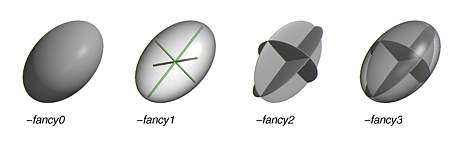

RASTEP
(Raster3D Thermal Ellipsoid Program)
SYNOPSIS
rastep [-h] [-iso] [-Bcolor Bmin Bmax] [-prob Plevel] [-radius R]
[-fancy[0-3]]
< infile.pdb > ellipsoids.r3d
rastep reads a Brookhaven PDB coordinate file and creates an
input file for the Raster3d render program.
Atoms are represented
by ellipsoids enclosing an isosurface of the probability density function
described by the Anisotropic Displacement Parameters Uij, commonly known
as thermal ellipsoids.
EXAMPLES
To describe thermal ellipsoids at the 50% probability level, with default
CPK colors, and send it for immediate rendering into a TIFF image file:
rastep < infile.pdb | render -tiff picture.tiff
To describe the same ellipsoids colored by Biso, and create an input
module with no header records for inclusion in a composite image:
rastep -h -Bcolor 10. 30. < infile.pdb > ellipsoids.r3d
cat header.r3d ellipsoids.r3d otherstuff.r3d | render -tiff picture.tiff
OPTIONS
- -h
- Suppress header records in output. By default rastep will produce
an output file which starts with header records containing a default set
of scaling and processing options. The -h flag will suppress these header
records. This option is useful for producing files which describe only
part of a scene, and which are to be later combined with descriptor files
produced by other programs.
- -iso
- Force isotropic probability surfaces (spheres). By default rastep
will look for
ANISOU records
in the PDB file and use these to generate
ellipsoids. If no ANISOU record is present for a given atom, the B value
given in the ATOM record will be used to generate a sphere instead. Selecting
the -iso option will force the program to use the B value in the ATOM record
even if an ANISOU record is also present.
- -Bcolor Bmin Bmax
- Assign colors based on B values rather matching ATOM records against
input or default COLOUR records. Atoms with B <= Bmin will be colored
dark blue; atoms with B >= Bmax will be colored light red; atoms with
Bmin < B < Bmax will be assigned colors shading smoothly through
the spectrum from blue to red.
- -prob Plevel
- By default, isosurfaces are drawn to enclose the 50% probability level
in the probability density function described by the Uij values in the
ANISOU record. The -prob option allows you to select a different probability
level instead. If 0<Plevel<1 this value is interpreted as a fraction;
if Plevel > 1 this value is interpreted as a percent.
- -radius R
- By default, rastep draws bonds with radius 0.10Å between
neighboring atoms using the same algorithm as rods. This option
allows you to change the radius of the bonds.
- -fancy[0-3]
- The -fancy option selects increasingly complex representations of the
rendered ellipsoids (see figure below)
- -fancy0 [default] solid surface
- -fancy1 draw principal axes of ellipsoid with a transparent bounding
surface
- -fancy2 draw colored equatorial planes of the ellipsoid
- -fancy3 draw colored equatorial planes with a transparent bounding
surface

NOTES
There is little, if any, consistency in format among the various programs
which write out anisotropic displacement parameters. This program interprets
the Uij values in the order specified for
ANISOU records in PDB format.
That is, columns 29-70 of the PDB record are interpreted as integers representing
104 Å2 x Uij , in the order U11, U22, U23,
U12, U13, U23. Note in particular that the order of cross-terms is not
the same as that used by ORTEP or shelx, which do not use PDB format. However,
the program shelxpro will produce correctly formatted PDB records from
a shelx coordinate file.
AUTHOR
Ethan A Merritt
REFERENCES
M.N. Burnett & C.K. Johnson (1996). "ORTEP-III: Oak Ridge thermal
ellipsoid plot program for crystal structure illustrations". ORNL-6895,
Oak Ridge National Laboratory. Table 6.1
K.N. Trueblood et al (1996). "Atomic Displacement Parameter Nomenclature,
report of a subcommittee on atomic displacement parameter nomenclature".
Acta Cryst. A52, 770-781.
 Back to top
Back to top
 Raster3D homepage
Raster3D homepage